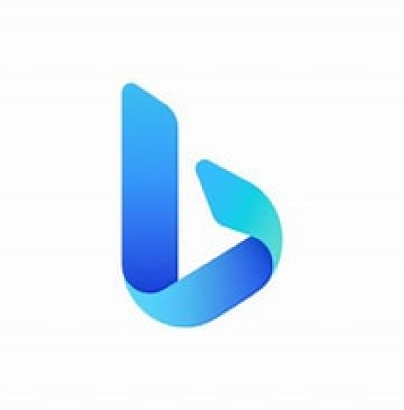
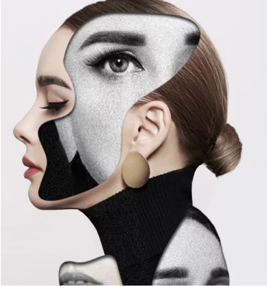
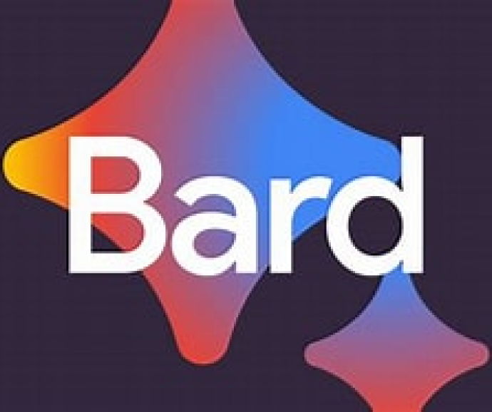

Chat GPT, layaknya asisten pribadi yang dapat membantu anda
kapanpun anda butuhkan
Bing AI from Microsoft
AI dari Microsoft satu ini juga layak untuk dijadikan kandidat
sebagai virtual assistance yang akan anda gunakan dengan
Pengetahuan yang dimiliki GPT 4 secara gratis



Bard From Google
Untuk membuktikan bahwa mereka adalah search engine terbaik,
google juga meluncurkan bard sebahgai text generative AI
mereka